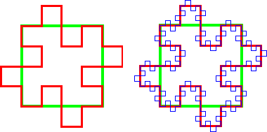

| A first attempt to extend the Euclidean area-perimeter relation
|
| To see why this cannot work, consider this illustrative example. |
| Start with the unit square. Take each side to be a initiator and replace it with the 8-segment generator. |
|  |
| Note that each of the four copies of the generator adds as much to the enclosed area as it removes, so the shape enclosed on the left has area 1. |
| On the right we superimpose the second iteration. |
| Continuing to the limit we produce a fractal curve that encloses a region of area 1. What are the dimension and length of this curve? |
| Dimension is sraightforward. From the pattern begun with the generator, we see each of the
four sides of the limiting curve is made of |
| ds = Log(N)/Log(1/r) = Log(8)/Log(4) = Log(23)/Log(22) = 3/2 |
| We know that the length (1-dimensional measure)
of an object of dimension |
| P(square) = 4⋅1, P(gen 1) = 4⋅8⋅(1/4) = 4⋅2, P(gen 2) = 4⋅82⋅(1/4)2 = 4⋅22 |
| The pattern is clear: |
| P(gen n) = 4⋅2n |
| So Length(P(gen n)) → ∞ as n → ∞. |
| Because the perimeter is infinite and the area is 1, the relation |
Return to the area-perimeter relation.